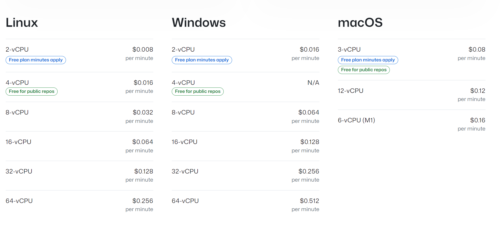

GitHub Actions – CI/CD được tích hợp ngay trong GitHub
GitHub Actions là nền tảng CI/CD và tự động hoá được tích hợp sẵn ngay trong GitHub. Thay vì phải dựng một server Jenkins riêng (như Section 10) hay cấu hình CodePipeline (Section 9), với GitHub Actions bạn chỉ cần viết một file YAML trong repository để build, test và deploy ứng dụng mỗi khi có sự kiện xảy ra: push code, tạo pull request, tạo tag, hay chạy thủ công. Toàn bộ pipeline chạy trên máy ảo do GitHub quản lý, không cần máy chủ riêng.
Để làm việc với GitHub Actions, bạn cần nắm 6 khái niệm sau — chúng là "từ vựng" xuất hiện trong mọi file workflow:
| Khái niệm | Ý nghĩa | Ví dụ |
|---|---|---|
| Workflow | Quy trình tự động hoá, định nghĩa trong một file .yml ở .github/workflows/. Một repository có thể có nhiều workflow. | build-docker.yml, blue-green-deployment.yml |
| Event | Thứ kích hoạt workflow chạy. | push, pull_request, workflow_dispatch (chạy tay), schedule |
| Job | Một nhóm các bước chạy trên cùng một runner. Các job chạy song song theo mặc định, có thể ràng buộc thứ tự bằng needs. | job build-and-push, job deploy |
| Step | Đơn vị nhỏ nhất trong một job. Mỗi step là một Action hoặc một câu lệnh shell (run). | step Checkout code, step docker build |
| Action | Thành phần có thể tái sử dụng (giống thư viện/plugin), đóng gói sẵn một tác vụ. | actions/checkout@v4, aws-actions/amazon-ecr-login@v2 |
| Runner | Máy chạy job: ubuntu-latest, windows-latest, macos-latest hoặc máy tự quản lý (self-hosted). | runs-on: ubuntu-latest |
Một workflow tối giản trông như sau. Hãy đối chiếu từng phần với bảng khái niệm bên trên:
name: Build and Push Docker Image # Tên workflow (hiển thị trên tab Actions)
on: # Event kích hoạt workflow
push:
branches:
- master
workflow_dispatch: {} # Cho phép chạy thủ công từ giao diện
jobs: # Danh sách các job
build-and-push: # Tên job
runs-on: ubuntu-latest # Runner chạy job
steps: # Các step trong job
- name: Checkout code
uses: actions/checkout@v4 # Dùng action checkout
- name: Build image
run: docker build -t my-app . # Chạy lệnh shellworkflow_call) và kiểm soát release bằng environment kèm người duyệt (approval).Event kích hoạt workflow; workflow gồm nhiều job chạy song song trên runner; mỗi step có thể dùng một Action hoặc chạy lệnh shell, ví dụ thao tác trực tiếp với AWS.

aws-actions/*).Mỗi khi có PR, workflow tự chạy lint, unit test và build để bảo vệ chất lượng trước khi merge vào nhánh chính.
Push code (hoặc tạo tag) → GitHub Actions build image và đẩy lên Amazon ECR, sẵn sàng cho ECS kéo về chạy (nội dung Lab của chương này).
Dùng các action của AWS (configure-aws-credentials, amazon-ecr-login...) kết hợp AWS CLI để triển khai lên ECS, S3, Lambda...
${{ secrets.TÊN }}.PowerUserAccess cho bài lab, thực tế nên viết policy hẹp hơn).workflow_dispatch cho tác vụ build thủ công thay vì kích hoạt liên tục.